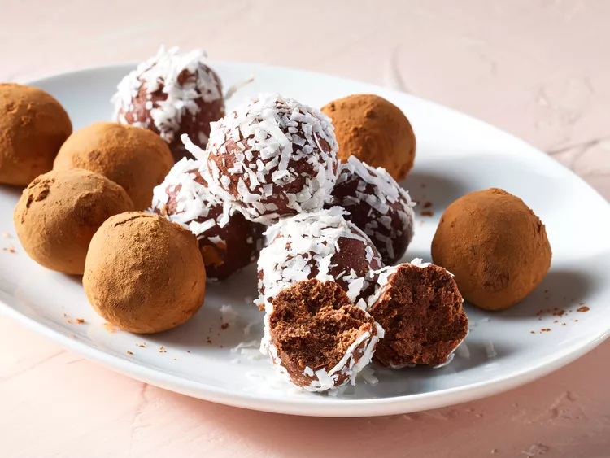

Truffles

What are truffles?
Truffles are a type of edible fungus that grow underground near the roots of certain trees, such as oak, hazel, and chestnut trees. They are highly prized in the culinary world for their unique flavor and aroma, which can add a rich, earthy taste to dishes.
- Prep Time: 30 minutes
- Cook Time: -
- Additional Time: 30 minutes
- Total Time: 1 hour
- Servings: 60
- Yield: 5 dozen
Ingredients
- 1(8 ounce) package cream cheese, softened
- 3 cups confectioners' sugar, sifted
- 3 cups semisweet chocolate chips, melted
- 1 1/2 teaspoons vanilla extract
Directions
- Gather all ingredients.
- Beat cream cheese in a large bowl until smooth. Gradually beat in confectioners' sugar until well blended.
- Stir in melted chocolate and vanilla until no streaks remain. Refrigerate until just set so about 15 to 30 minutes.
- Shape chilled mixture into 1-inch balls.
- Roll balls into your favorite toppings, if desired. Enjoy!